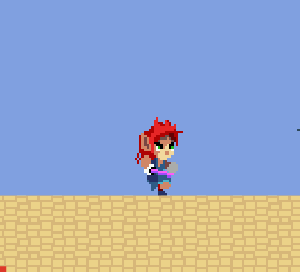
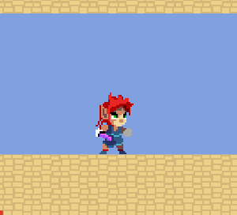
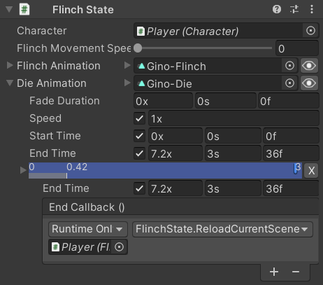

This state activates itself in response to the Character getting hit by an attack (specifically, when the Health.OnCurrentHealthChanged event occurs). None of the other scripts in the system actually reference this one, it's fully automated.
It has a Flinch Animation for normal hits and a Die Animation for when the Health.CurrentHealth reaches 0.
| Enemy | Player |
|---|---|
|  |  |
All characters have a Flinch Animation to play when they get hit. |
The Player also has some Camera Shake when they get hit (separate from this state). |
None of the enemies actually have separate |
The Player has a proper die animation. Player Death also reloads the level after a few seconds as explained below. |
Movement
Flinching will interupt other actions and for most characters it prevents them from moving during the Flinch Animation, but the Gobbat enemy has its _FlinchMovementSpeedMultiplier field set to 0.5 so it can still fly at half speed rather than stopping completely.
public sealed class FlinchState : CharacterState
{
[SerializeField, Range(0, 1)]
[Tooltip("The character's speed is multiplied by this value while flinching")]
private float _FlinchMovementSpeedMultiplier;
That field is only used while the character is alive, otherwise they can't move:
public override float MovementSpeedMultiplier => Character.Health.CurrentHealth > 0 ? _FlinchMovementSpeedMultiplier : 0;
Regardless of whether movement is allowed in this state, turning isn't:
public override bool CanTurn => false;
Fields
The other fields are self-explanatory:
[SerializeField]
[Tooltip("The animation to play when the character gets hit by an attack")]
private ClipTransition _FlinchAnimation;
public ClipTransition FlinchAnimation => _FlinchAnimation;
[SerializeField]
[Tooltip("The animation to play when the character's health reaches 0")]
private ClipTransition _DieAnimation;
public ClipTransition DieAnimation => _DieAnimation;
Initialization
On startup, this state configures its end events so that after the Flinch Animation it returns to its default Idle state and after the Die Animation the GameObject is destroyed:
private void Awake()
{
_FlinchAnimation.Events.OnEnd += Character.StateMachine.ForceSetDefaultState;
_DieAnimation.Events.OnEnd += () => Destroy(Character.gameObject);
All characters in the Platformer Game Kit are placed directly in scenes, but in a game where characters are spawned by scripts it would be neneficial to use an object pooling system like the one included in Weaver to deactivate characters when they die so they can be reused instead of destroying them (which costs performance for garbage collection) and recreating them (which costs performance too). Unfortunately, Animancer's ObjectPool system is not designed for scene objects so it wouldn't be helpful here.
It also registers callbacks to the Health.OnHitReceived and Health.OnCurrentHealthChanged events to set itself as the current state when the character gets hit or dies:
Character.Health.OnHitReceived += (hit) =>
{
if (hit.damage > 0)
Character.StateMachine.ForceSetState(this);
};
Character.Health.OnCurrentHealthChanged += (oldValue, newValue) =>
{
if (newValue <= 0)
Character.StateMachine.ForceSetState(this);
};
}
Note that ForceSetState is being used rather than TrySetState to ignore the previous state's CanExitState property. The Changing States page explains those methods in more detail.
State Life Cycle
Entering this state simply plays the appropriate animation based on the Health.CurrentHealth:
public override void OnEnterState()
{
base.OnEnterState();
var animation = Character.Health.CurrentHealth > 0 ? _FlinchAnimation : _DieAnimation;
Character.Animancer.Play(animation);
}
And while in this state, nothing is allowed to interrupt it (unless they use ForceSetState like this state):
public override bool CanExitState => false;
Player Death
The Platformer Game Kit doesn't currently have a death / game over screen or main menu, so instead it just has a method to reload the current scene:
public void ReloadCurrentScene()
{
var scene = SceneManager.GetActiveScene();
#if UNITY_EDITOR
UnityEditor.SceneManagement.EditorSceneManager.LoadSceneInPlayMode(scene.path, default);
#else
SceneManager.LoadScene(scene.buildIndex);
#endif
}
}
That method isn't called anywhere in the code. Instead, it is assigned to the End Event of the Player's Die Animation with the End Time set to 3s:

So when the player dies, they play the Gino-Die animation which leaves them laying on the ground and stuck in the FlinchState but the animation time keeps increasing after the last frame and once 3 seconds pass it calls that method to restart the current level.